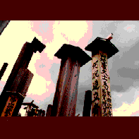

恐山/青森県むつ市
本州再北端の街､むつ市から車で数十分､イタコの口寄せで有名な恐山は下北半島中央部のヒバの原生林の大樹海の中にある。
この恐山､昔から死者の集まる霊場とされているのだが､成程､菩提寺の南側に広がる"地獄"エリアに一歩足を踏み入れるとその風景に圧倒される。
硫黄の煙の噴き出す中､卒塔婆､石積､風車などが無数に並び､かなりの迫力がある。
中には願い事を書いた紙が貼ってあったりして､それがまたすっごい願いだったりするのでビビリ係数一気に高まったりするのである。
小さい頃見た心霊番組を思い出してしまった。コワイ。
次にその地獄の丘陵地帯を抜けると､突如視界が開け､真っ白な砂浜にでる。
宇曽利山湖だ。このコントラストはまさに"地獄"から"天国"へ来たかのような気分になる。
蓮華八葉と呼ばれる山々に囲まれた湖は奇麗なエメラルド色で､これを見ていると､生きてる内は良いことをたくさんして天国にいきたいものだ､と思ったりしてしまう。
ところで､この神聖な霊場にも結構おポンチな､というかなごみのスポットがあるのでそっちの話を。
この恐山の境内には温泉が湧いており､薬師の湯､古滝の湯､冷抜の湯､花染の湯と名づけられた湯舎があるが､これが全部堀っ建て小屋寸前の建物でなかなか良い。
特に冷抜の湯は古い建物で､しかも参道の真横にあるもんだから風呂につかっていると外から観光客のオバチャンは覗いていくし､参道の逆側からはお地蔵さんが覗いているしで､あまりなごみのスポットではなかったかな。
1988.8.
珍寺大道場 HOME